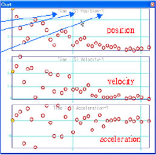

LDM
Manual de Operación de Captura y Análisis de Video
por medio de Video Contents Analizer
Hacer un proyecto nuevo con el icono  o archivo- proyecto nuevo. Se abrirá el cuadro de dialogo de los archivos a analizar
o archivo- proyecto nuevo. Se abrirá el cuadro de dialogo de los archivos a analizar
Cuadro de dialogo para abrir un archivo de video nuevo.
Selecciona el archivo que desees analizar con el programa VCA y ábrelo
Archivo abierto para análisis
El archivo de video para analizar deber tener formato AVI.
La resolución del video debe ser 320 x 240
Selecciona o archivo –abrir proyecto, para abrir un archivo VCA previamente guardado
Cuadro para abrir un archivo
Selecciona el archivo que desees abrir
El programa leerá el archivo seleccionado
El programa mostrara los datos como valores establecidos.
Para guardar un proyecto haz clic en o archivo- guardar como
Guarda el archivo después de analizado ya que puedes hacer varios procesos guardando un archivo editado
Dale nombre al archivo, haz clic en el botón guardar después de seleccionar la carpeta en la que guardaras el archivo
Para cerrar el proyecto selecciona o archivo- Cerrar todo.
Cierra todos los proyectos después de guardados
o captura
Filma y almacena los experimentos a través de una PC- cámara, instalada sobre la computadora
Precaución:
Especificación de Hardware recomendado
Computadora con puerto USB 2.0
PC-cámara: USB 2.0 (30 cuadros por sec).
Diseño:
Los objetos en movimiento deberán ser de diferentes colores El color de los objetos en movimiento deberá contrastar con el color que utilicemos como fondo No use un fondo reflexivo como un espejo Cuando haga la captura asegúrese que haya suficiente luz .
Rutas para capturar un video
Puede hacer una captura de video con una cámara de video que tenga 30 cuadros por se convierta a archivo AVI, después de capturar con una cámara de video (guarde con una resolución de 320x240)
a) Elige de la lista de video una liga
b) Conecta el dispositivo seleccionado en a
c) Para, el dispositivo de video debe estar previamente conectado
d) Guarda las imágenes de el dispositivo de video, Para y captura con este botón también
e) Cambia a captura de archivos
f) Información sobre la captura de archivos
g) En este lugar se muestran las imágenes capturadas
Procedimiento de captura de imágenes
1) Selecciona el dispositivo que desees de la lista de dispositivos. Veras la imagen de dispositivo de video en g
2) El archivo capturado es guardado como C:\CAPTURE.AVI'
3) Después elige (comenzar captura), comienza un experimento Si eliges comenzar captura, el botón cambiará automáticamente a detener captura
Cuando guardas una fotografía o video puede no mostrarse sobre g
Interrumpe guardar con detener captura
Cuando selecciones detener captura, el programa no funcionara, presiona ESC para detener
4) Desconecte el dispositivo con [previamente detenido] cuando el experimento terminó.
ANALISIS
Ten en cuenta 4 pasos antes de realizar el análisis
a) Fija el punto de origen Elige el punto de origen para marcar la posición del objeto (coordenadas)
b) Elige el número de objetos y el intervalo. Elige el número de objetos para mostrar sobre las coordenadas y el intervalo del tiempo en (opciones) la ventana
c) Establece las proporciones La proporción del objeto es necesaria para analizar la distancia del movimiento
d) Registre el peso del objeto Este procedimiento es requerido para calcular la energía cinética
1) Fija el punto origen
Fija el punto de origen para calcular el punto de inicio, coordenadas y dirección del objeto
Haz clic sobre el punto de origen elegido (Modo de entrada) es cambiado a (modo de origen)
Haz clic sobre el punto deseado
Selecciona nuevamente para confirmar el punto de origen (modo de origen) cambia a (modo de entrada)
2) Elige el número de objetos y el intervalo
Elige tres artículos in (opciones) ventana
a) Elige el número de objetos a analizar.
b) Elige el tiempo de movimiento.
c) Selecciona el punto de referencia del video en la pantalla.
Elige 'a' y 'b 'primero, si 'a' y 'b' están revisados los datos de coordenadas son borradas
3) Control de proporción
Establece el tamaño real del objeto para medir distancia en el archivo de video
El orden del control del radio es el siguiente:
a) Selecciona la dirección de proporción, si es vertical (eje Y) u horizontal (eje X)
b) Elige la longitud real y la unidad.
c) Proporciona la duración del video.
d) Cuando seleccionas (Proporcionar rango) El primer punto a proporcionar aparece en la columna de abajo
e) Después de proporcionar el primer punto, el mensaje de establecer segundo punto es desplegado
4) Registro del peso del objeto
El peso del objeto es esencial para calcular la energía
a) Selecciona el objeto para proporcionar su peso
b) Proporciona el peso
c) Elige (establecer) y guarda
El orden en el que se dibuja el objeto es decidido por dos métodos.
Es decidido por el orden, la posición establecida en cada cuadro del video mostrado
Es decidido por el orden de registro, color del objeto a dibujar
Finalmente estas listo para trabajar y controlar la pantalla del video y trabajar en el análisis.
5) Control de la pantalla de video
La ventana de video es la más importante del programa VCA,
a) Presenta el modo de trabajo.
b) Es la barra de los botones de control de video
c) Es la barra que muestra la posición del video
5.1) Barra de funciones

a) Detener: Detiene el video, y regresa el video al inicio
b) Iniciar: Iniciar video
c) Pausa: Pausar video
d) Adelantar: Adelanta el video a la posición deseada
e) Dibujar posición del objeto designado automáticamente por cuadro debe proporcionarse el color del objeto para usar esta función
f) Es que la barra que indica la posición de video.
Puede moverse por cuadros usando esta barra
6) Registrar el color del objeto para extraer datos
Distinga el objeto por el color para extraer posición.
a) Abra el archivo para ver el movimiento del objeto.
b) Seleccione el numero, y observa el objeto sobre la pantalla.
c) Si un color de la lista de colores es cambiada, se procesara completamente.
7) Extraer posición de un objeto automáticamente
Si seleccionas extracción automática en la ventana de video, comenzara a correr desde el primero y hará la extracción automáticamente. Después de la extracción mostrara en una tabla los valores extraídos
8)Análisis con grafico
Selecciona (opción grafico) en la ventana con
Selecciona el eje X y el eje Y
El valor del eje de las X debe ser 1, y el eje de las Y puede ser multi
No puede ser duplicado el valor de las ejes de la X y Y.
Los análisis que se pueden realizar por medio de este programa son:
Posición
Velocidad
Aceleración
Momento
Fuerza neto
Energía cinética
Energía potencial
Energía total
El orden para mostrar el análisis de la grafica es el siguiente:
a) Selecciona el valor de X
b) Selecciona el número del objeto y fija el valor de la coordenada X y el valor de la coordenada Y del objeto
c) Selecciona el contenido del análisis que desees ver
d) (añada) los despliegues la ventana gráfica adicional, y [Aplique] los cambios presentes en la grafica de los contenidos recientemente seleccionados.

Esta grafica muestra en el eje de las X se encuentra el tiempo y en el eje de las Y esta posición, aceleración, velocidad.
9) Relación
Ventana principal (ventana de video, tabla de datos, grafico) se unen juntos
Si selecciona un valor en la tabla, los valores, aparecerán señalados en la grafica
Si seleccionas un punto en la grafica, los valores, aparecerán señalados en la tabla
10) Trazos del objeto
Muestra el despliegue de las coordenadas del objeto en la pantalla.
11) Mostrar video en la ventana
Muestra o esconde la ventana de video